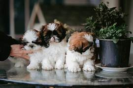
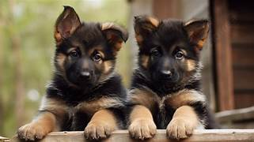
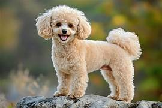

Welcome Dog Lovers!
The Shih Tzu was recognized as a breed by the AKC in 1969

That face! Those big dark eyes looking up at you with that sweet expression! It's no surprise that Shih Tzu owners have been so delighted with this little 'Lion Dog' for a thousand years. Where Shih Tzu go, giggles and mischief follow. Shi Tsu (pronounced in the West 'sheed-zoo' or 'sheet-su'; the Chinese say 'sher-zer'), weighing between 9 to 16 pounds, and standing between 8 and 11 inches, are surprisingly solid for dogs their size. The coat, which comes in many colors, is worth the time you will put into it'¿few dogs are as beautiful as a well-groomed Shih Tzu. Being cute is a way of life for this lively charmer. The Shih Tzu is known to be especially affectionate with children. As a small dog bred to spend most of their day inside royal palaces, they make a great pet if you live in an apartment or lack a big backyard. Some dogs live to dig holes and chase cats, but a Shih Tzu's idea of fun is sitting in your lap acting adorable as you try to watch TV.
The Labrador Retriever, also known simply as the Labrador or Lab, is a British breed of retriever gun dog. It was developed in the United Kingdom from St John's water dogs imported from the Colony of Newfoundland, and was named after the Labrador region in that colony. It is among the most commonly kept dogs in several countries, particularly in the Western world.
Labradors are often friendly, energetic and playful.[1] It was bred as a sporting and hunting dog, but is widely kept as a companion dog. Though content as a companion, these dogs are intelligent and require both physical and mental stimulation. It may also be trained as a guide or assistance dog, or for rescue or therapy work.
In the 1830s the 10th Earl of Home and his nephews, the 5th Duke of Buccleuch and Lord John Scott,[3] imported progenitors of the breed from Newfoundland to Europe for use as gun dogs. Another early advocate of these Newfoundland fishing dogs was the 2nd Earl of Malmesbury, who bred them for their expertise in waterfowling.[3]
During the 1880s the 3rd Earl of Malmesbury, the 6th Duke of Buccleuch and the 12th Earl of Home collaborated to develop and establish the Labrador Retriever breed. The dogs Buccleuch Avon and Buccleuch Ned, given by Malmesbury to Buccleuch, were mated with bitches carrying blood from those originally imported by the 5th Duke and the 10th Earl of Home. The offspring are the ancestors of all modern Labradors

The German Shepherd is a medium to large-sized breed of dog of the herding group. It was developed by Max von Stephanitz in the late 19th century in Germany. The breed is known for its intelligence, loyalty, and versatility. German Shepherds are often used as police dogs, military dogs, and service dogs due to their trainability and strong work ethic.
It was developed in Germany from 1899 by Max von Stephanitz, using various traditional German herding dogs, and gained international recognition after the end of the First World War. It was bred as a herding dog, for herding sheep, but has since been used in many other types of work, including disability assistance, search-and-rescue, police work, and warfare. It is commonly kept as a companion dog, and is among the most frequently registered breeds world-wide.To combat these differences, the Phylax Society was formed in 1891 with the intention of creating standardised development plans for native dog breeds in Germany.[4] The society disbanded after only three years due to ongoing internal conflicts regarding the traits in dogs that the society should promote;[4] some members believed dogs should be bred solely for working purposes, while others believed dogs should be bred also for appearance.[5] While unsuccessful in their goal, the Phylax Society had inspired people to pursue standardising dog breeds independently.

The Poodle is a breed of dog that comes in three sizes: Standard, Miniature, and Toy. They are known for their intelligence, hypoallergenic coat, and distinctive curly fur. Poodles are often associated with elegance and are popular as companion dogs and show dogs. They are also highly trainable and excel in various dog sports and activities.
The Poodle's origins are somewhat debated, but it is generally believed to have originated in Germany as a water retriever. The breed was later standardized in France, where it became popular among the aristocracy. The name "Poodle" is derived from the German word "Pudel," which means "to splash in water," reflecting the breed's history as a water dog.
The poodle is an extremely smart, energetic, and friendly dog known for their signature curly coat and three size varieties: toy, miniature, and standard. Under the poodle's frilly, low-shedding coat is a powerful athlete and an overall wonderful companion. These dogs typically get along with people very well and can be trained in a variety of tasks, including work as service and therapy dogs.
| Dog Breed | Time Span (Years) |
|---|---|
| Shih Tzu | 10+ |
| Labrador Retriever | 15+ |
| German Shepherd | 12+ |
| Poodle | 12+ |